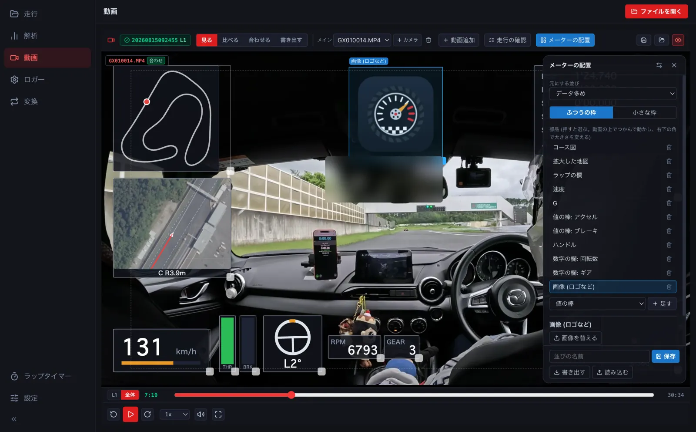

DashWareのMac向け代替を探している方へ
Macで車載動画にGPSデータやメーターを重ねたい方へ。LapLoupeは、走行ログと動画を同期し、自分で選んだ部品を重ねて動画を書き出せる、無料の走行解析アプリです。Apple SiliconのMac向けデスクトップ版と、パソコンのブラウザ版があります。
速度やGだけでなく、使う部品と見た目を選ぶ
速度・G・ラップタイム・タイム差・コース図・数値・値の棒・グラフ・画像などを組み合わせられます。部品をつかんで配置し、大きさ・値・色・目盛りを変更。ロゴを置いたり、自分のレイアウトとして保存・共有したりできます。

GPSログやCSVを、GoProなどの車載動画と合わせる
GPX・NMEA・VBO・対応するCSVや、GPS入りGoPro動画を読み込めます。動画とログの時刻を使って同期し、ずれている場合は手動で調整します。CSVの列・単位を設定して回転数やアクセルなどを表示したり、計算式で作った値をメーターに使ったりできます。使える値は、元のログに記録されている内容によります。
完成した動画にも、動画編集用の素材にも
- メーターを重ねたMP4として、そのまま見られる動画を書き出す。
- メーターだけの透明背景WebMやPNG連番ZIPを書き出し、動画編集ソフトで重ねる。
- ラップ・動画全体・指定した時間範囲を選び、解像度やフレームレートを設定する。
Macで試す手順
- Apple SiliconのMacならデスクトップ版をダウンロードするか、パソコンでブラウザ版を開きます。
- 手元の走行ログと動画を開き、動画の画面で同期を確認します。
- 「メーターの配置」で部品を選び、配置や色を調整します。
- 「書き出す」で形式と範囲を選びます。
ログは端末内で処理します。メーターの作成・編集と動画書き出しはパソコンで行います。